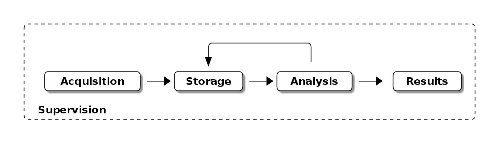
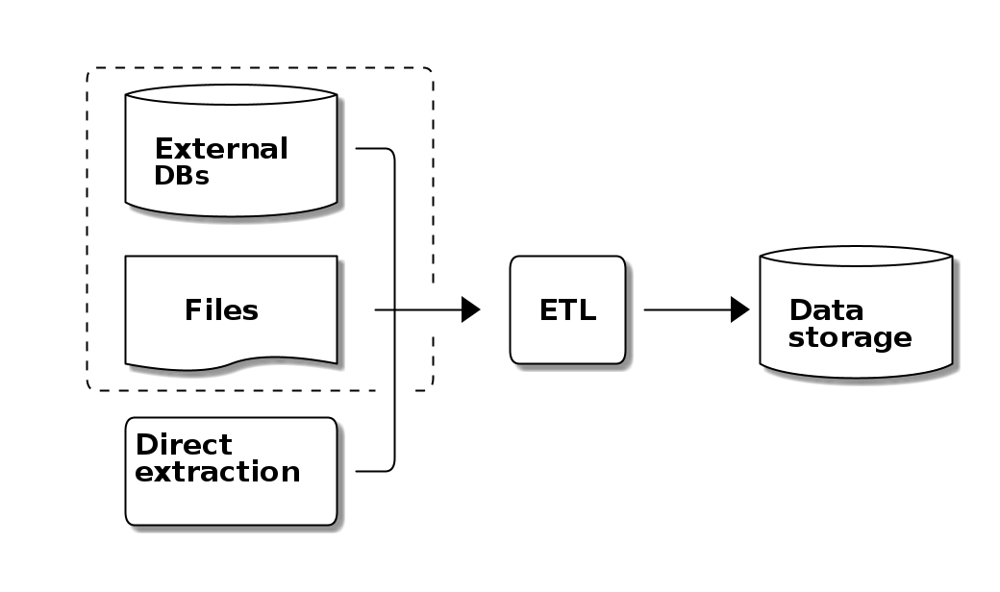
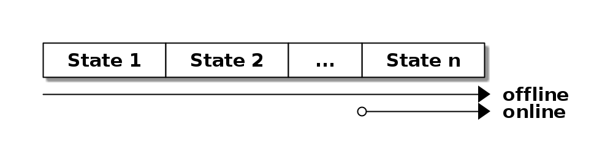
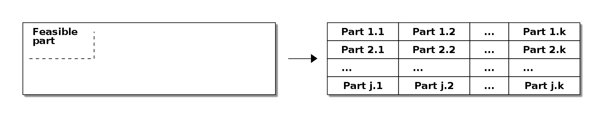

From academic research to enterprise big data
José Anastacio Hernández Saldaña
2020-09-18 Fri 12:00
Table of Contents
The simplified research process

Data acquisition
Extract-Transform-Load

Data storage
- DB
- Files
- File systems
Data analysis
- Statistical test
- Forecasting
- Data mining
- Anomaly Detection
- Clustering
- Labeling
- Regression
- Summarization
Data presentation
- reports
- tables
- graphs
- decisions
Process supervision
Revision of process and results.
The academic experience
- Characteristics
- Research process focus to obtain one result
- Sequential steps, one at a time
- Minimal resources available
Data acquisition
- Extract-Transform-Load
- mainly handcrafted
- automated scripts
Data storage
- files
- csv, xml or similar
- DB
- Monolitic database
- file systems
- high cost and background needed
Data analysis
- Centered in statistical tests
- Offline algorithms
- Non-parallel algorithms when parallel is possible
- Algorithms with distributed data are unnecessary or need high cost and background
Data presentation
- image based
- reports
- tables
- graphs
- decisions
- advice miss
Process supervision
Human revision of process and results
The enterprise experience
- Characteristics
- Repeated research process
- Resources available with complexity constrains.
- Online process, multiple steps at a time.
Data acquisition
- Extract-Transform-Load
- Mainly automated scripts
- Multiple ingestion of data is a must.
Frameworks

Data storage
- DB
- distributed databases
- replication in some cases
Data analysis
Offline and online algorithms
Time series of measurements, entities characteristics updates and forecasting are heavily impact.

Map-reduce approach (divide and conquer)
Analysis of huge amount of data is not feasible without data replication and distributed process to perform the analysis.

Data presentation
- system based (mainly web)
- images generated as requested, image store limited
- suggested decisions hype
Process supervision
human revision of result
automated process
- zookeper
- k8s
- kibana
- api
- kafka
Conclusion
If the research process need to repeated, be prepare to enhance your knowledge about distributed systems, online/parallel algorithms and frameworks.
Questions and Answers
Thanks!
- email: jose.hernandezsal@uanl.edu.mx
- twitter: @pptashiro
- Disclaimer This presentation was made with open source projects as emacs, org-mode, org-reveal and ditaa.